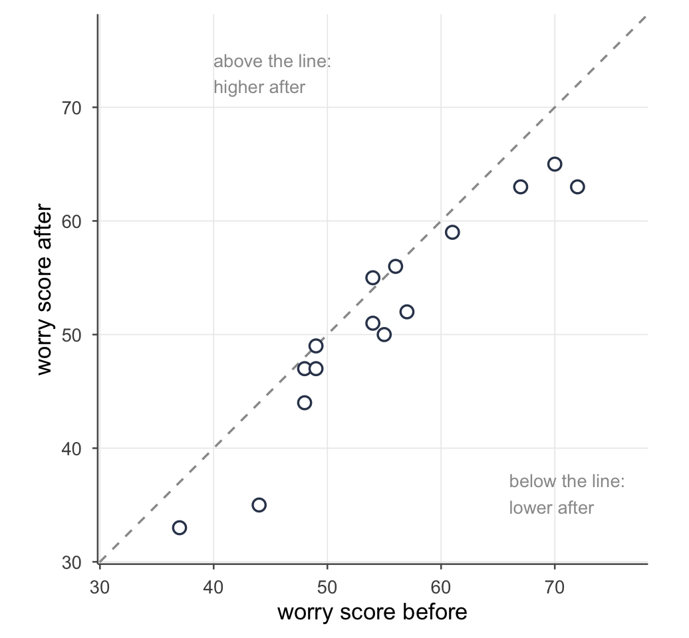
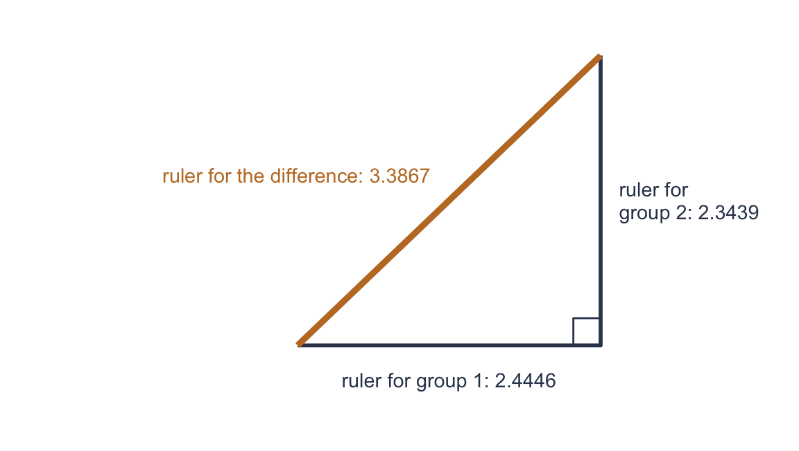
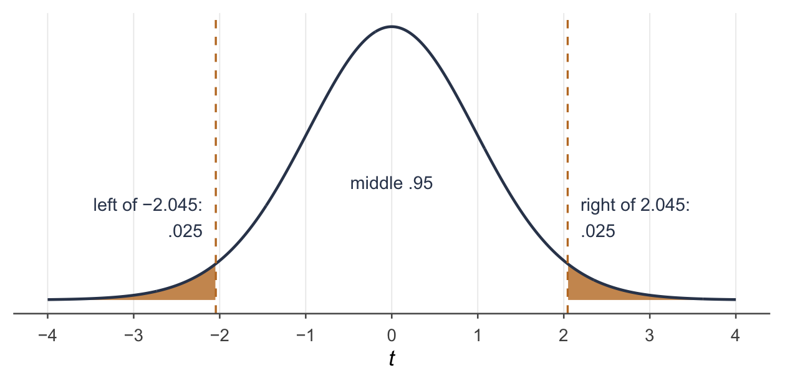
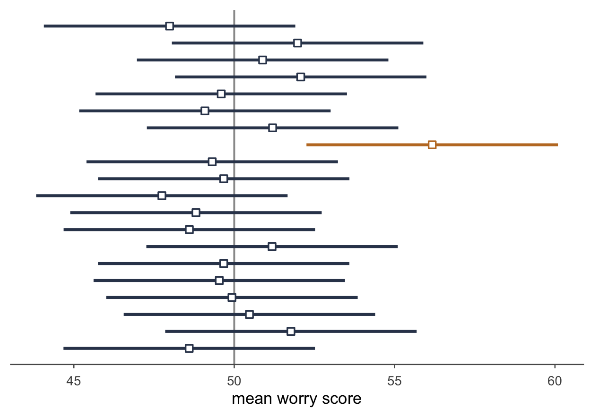
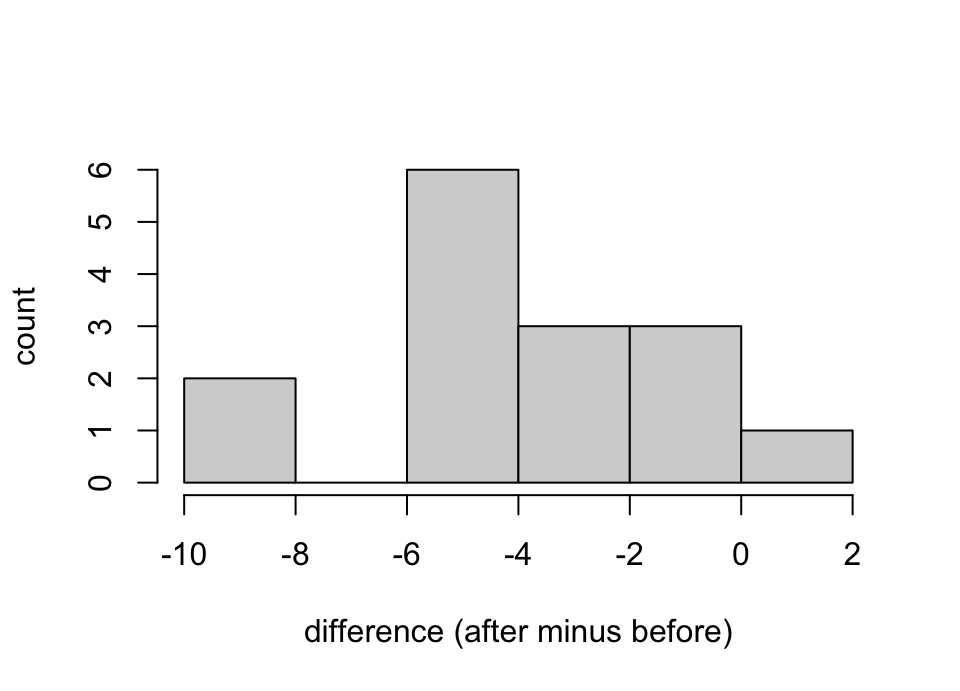
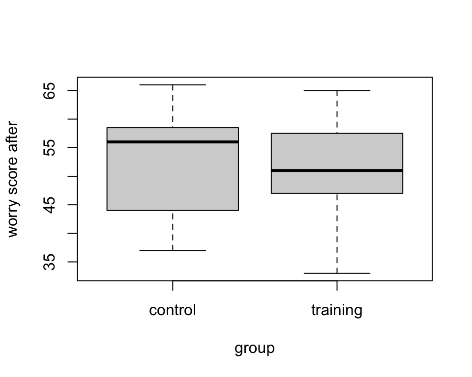

Week 3 · Hypothesis tests for two means and confidence intervals
the same people twice, or two groups — and a margin around your estimate
After the sleep training the bat hung above the lake and looked sourly at the moth, who was fluttering carefree around the reeds.
“I still worry more than he does,” he said.
“He always worries less, that takes no training, just being a moth,” said the dormouse, “you’d do better to compare yourself with a bat.”
The bat looked down, and in the still water hung a bat, the right way up, looking back at him.
“Then from now on I’ll hang next to myself,” he said, “the one from before the training next to the one from now.”
He looked at the water once more and chuckled: “At least then I’ve got someone who worries exactly the way I do.”
What you learn this week
telling whether two means come from the same people or from two groups
the paired t-test: first difference scores, then the test from week 2
the independent t-test, in Welch’s version
why you don’t use the pooled version here, and what Levene’s test does
the confidence interval: for μ, for a paired difference and for μ₁ − μ₂
what the 95% of a 95% interval does and does not mean
in R: t.test() paired and independent, boxplot(), hist(), plot() with abline(), and qt()
Two means, two kinds of data
So far you have set one mean against one fixed number: do poor sleepers have a mean worry score different from 50? This week you set two means side by side.
Take the practice dataset slaapstudie from week 1: 30 students in their first year who sleep badly. Half of them got sleep training, the other half didn’t. Everyone’s worry was measured, before and after. Two questions you can ask with these data:
Does the training group worry less after than before? Those are two measurements of the same people. That is called paired: paired samples, or dependent measurements.
Does the training group worry differently afterwards from the control group? Those are two different groups of people. That is called independent (independent samples).
The difference is not in the numbers but in how they belong together. Ask yourself one question: does this score belong to that score, from the same person or from a fixed pair? Then it is paired.
Two ways in which two means belong together
paired
independent
who
the same people twice, or fixed pairs
two separate groups
examples
before and after; twins; the partners in a couple
training and control; students and non-students
in your data
two columns of scores side by side
one column of scores, one column with the group
the test
the paired t-test
the independent t-test (Welch)
TipA pair doesn’t have to be the same person
Twins of whom one gets the training, or the two partners in a couple: that is paired too. Each score in one row belongs to exactly one score in the other row. With two separate groups, the third person in the training group belongs to nobody in the control group.
Paired: one column of differences
The training group: 15 people, each measured twice. The trick of the paired test is that you straight away bring those two measurements down to one number per person: the difference.
The first five participants in the training group; another ten follow
person
before
after
difference d
1
54
51
−3
3
48
47
−1
4
54
55
1
7
67
63
−4
8
44
35
−9
…
…
…
…
The numbers are the ones from the dataset; anyone missing in between is in the control group.
From here on you no longer have two columns, just one little column of differences. And on one column of numbers you can run the test from week 2: one mean, against zero.
You choose the direction yourself. Here it is after minus before, so a negative difference means: less worry after the training. The other way round is fine too; then all the signs flip. Agree on it beforehand and stick to it.
The mean of those differences is called (d-bar), and it is exactly the difference between the two means: the mean after is 51.27, before 54.73, so = −3.47. But the standard deviation of the differences, , you cannot get from the two separate standard deviations. For that you need the pairs themselves: is simply the standard deviation of the column of differences. R works it out (sd()), and in an exam it is given. Here it is 2.973.

Figure 1: The 15 participants in the training group. Each dot is one person: left to right is their worry score before, bottom to top their score after. On the dashed line, after equals before. Below it lie 12 dots (less worry afterwards), on it 2 and above it 1.
Do you see in Figure 1 how close the dots lie to the line? Whoever worried a lot before still worries a lot after. Between them, the people are spread over 35 points, but nobody shifts more than 9 points off the line. And almost everyone shifts the same way: down.
The hypotheses
Under nothing changes, on average. Then you expect a mean difference of zero: bread at the baker’s. Not exactly zero in every sample, because chance always shifts things a little, but in the population, yes.
: — on average, poor sleepers who do the training worry as much after as before
: — on average, something changes
is the mean difference in the population: Greek, because that is a number you don’t know. You’ll also come across it as δ (delta).
The test
NoteThe paired t-test
With n the number of pairs: the number of difference scores, not the number of measurements.
That is the t-test for one mean from week 2, on the column of differences, with μ₀ = 0.
Is −3.467 a lot? You can’t tell. Raw is rubbish: a difference of three points can be big or small, depending on how much chance shifts things around. So you ask: how many times does the standard error, the ruler, fit into that difference?
First the ruler:
Keep those four decimals until the end. Then divide:
The ruler fits into it more than four times, downwards: the difference is negative. You get the two-tailed p-value from the t-distribution, just as in week 2: one tail, times two. That is allowed because the t-distribution is symmetric; the other tail is exactly as heavy.
2*pt(-4.52, df =14)
[1] 0.0004804551
That is p < .001. (Further down, R calculates with the unrounded t and gets 0.0004839: the same, apart from the rounding of t.) In an exam you are given a p like that. If you want to see for yourself where it lies, bracket it in table D (in Dutch). In row 14, the last column is the column .0005, and the number there is 4.140; your |t| = 4.52 lies beyond even that. So one tail holds less than .0005, and the two tails together less than .001: p < .001, just as in R.
Deciding.p ≤ .05, so you reject the null hypothesis that poor sleepers who do the training worry as much after as before, on average: that is your statistical conclusion. In plain words, your conclusion in context: after the training the participants worry differently, on average, from before; in this sample their scores are 3.47 points lower.
NoteHow to write it up
The participants’ worry scores differed between before and after the training, t(14) = −4.52, p < .001; afterwards their scores were on average 3.47 points lower.
WarningDoes that mean the training works?
This test doesn’t tell you that yet. It compares after with before, in the same people. But worry can also go down without any training: the exam week is over, or whoever scored extra high at the first measurement scores a bit lower the second time all by itself. To judge the training you need a group that got no training. That comes at the end of this week, in So does the training work?.
NoteCheck in R — the paired t-test
In R you can do it in two ways, and they give exactly the same result. How you select the training group is in week 1, in In R: choosing rows. The two scores are in piekeren_voor and piekeren_na: worry before and worry after, in Dutch, like all the names in the dataset.
training <- slaapstudie[slaapstudie$groep =="training", ]# 1. the two columns, and tell R that they are pairedt.test(training$piekeren_na, training$piekeren_voor, paired =TRUE)
Paired t-test
data: training$piekeren_na and training$piekeren_voor
t = -4.5163, df = 14, p-value = 0.0004839
alternative hypothesis: true mean difference is not equal to 0
95 percent confidence interval:
-5.113000 -1.820333
sample estimates:
mean difference
-3.466667
# 2. first the difference scores, then the test for one mean against 0training$verschil <- training$piekeren_na - training$piekeren_voort.test(training$verschil, mu =0)
One Sample t-test
data: training$verschil
t = -4.5163, df = 14, p-value = 0.0004839
alternative hypothesis: true mean is not equal to 0
95 percent confidence interval:
-5.113000 -1.820333
sample estimates:
mean of x
-3.466667
Both give t = −4.5163, df = 14, just as by hand. The interval at the bottom is the same too; what that is comes in The confidence interval. The new column is called verschil: Dutch for difference.
Independent: two groups
Now the second question: does the training group worry differently afterwards from the control group? There are no pairs here. Person 1 in the training group belongs to nobody in the control group. You have two separate groups, each with a mean and a standard deviation.
Worry afterwards, per group
group
n
mean after
1 training
15
51.267
9.468
2 control
15
52.533
9.078
: — afterwards, both groups worry equally on average
: — afterwards, they worry differently on average
You can also write as . That is the same statement, and it shows what it is all about: a difference, and whether that is zero.
The standard error of a difference
Each group brings its own uncertainty. The mean of group 1 shifts from sample to sample, so does that of group 2, and the difference shifts with both. You add the two uncertainties up, but not just like that: squared.
Each fraction below is a standard error from week 2, squared, because . A squared standard error like that is the variance of the mean: how far it shifts from sample to sample, but squared.
Variances add up, as long as the two groups are independent, even for a difference, where you subtract one mean from the other. Why that is so, you don’t need for the calculation; if you want to see it for a sum: week 2, If you want to go further — where that square root comes from.
Fill it in. First the squares, then the two fractions, then add up, and only then the square root:
NoteIf you want to go further — squared, just like Pythagoras
The ruler for group 1, the standard error of its mean, is points; the ruler for group 2 is .
Just like Pythagoras: the two rulers are the two sides at the right angle, and the standard error of the difference is the hypotenuse. In a right-angled triangle, too, you don’t add up the sides but their squares, , and only then take the square root. Here those squares are the two fractions from above: , and the square root of that is the hypotenuse.

The standard error of the difference as the hypotenuse. The two sides at the right angle are the rulers for group 1 (2.4446) and group 2 (2.3439); the hypotenuse, the ruler for the difference, is 3.3867: shorter than the two put together (4.7885).
Walk along the bottom side of the figure first and then up the upright side, and that detour is 4.7885: the two rulers simply added up. The orange hypotenuse is only 3.3867. The angle is a right angle because the groups are independent: what the mean of one group happens to do says nothing about the mean of the other.
The test
NoteThe independent t-test (Welch)
R works out the degrees of freedom; see Welch, pooled and Levene.
Why does drop out? Because you calculate in the world of , just as in week 1. There is zero, and subtracting zero does nothing.
The ruler here is 3.3867 points, and the difference isn’t even half a ruler. R gives df = 27.95 with it, and then p = .71.
Deciding.p > .05, so you do not reject the null hypothesis that both groups worry equally on average afterwards. Afterwards, no difference between the groups has been shown. That is not the same as “the groups worry equally”: see week 1.
NoteHow to write it up
Afterwards, worry scores did not differ significantly between the training group and the control group, t(27.95) = −0.37, p = .71.
TipWhy paired is so much more sensitive
Take the training group again, with the same difference of −3.47. Now pretend that before and after are two separate groups, and work out the ruler from this section:
as two separate groups: 3.4982, because people differ a lot from one another (the standard deviation is 9.69 before and 9.47 after);
as pairs: 0.7676, because each person is compared with themselves ( is only 2.97).
Same people, same difference, and a ruler more than four times as long. As separate groups p = .33; as pairs p < .001.
Someone who worries a lot worries a lot before and after. In the difference per person that drops out; between two separate groups it stays, and a small difference drowns in it. You can see it in Figure 1 too: the dots run from 37 to 72, but they all lie close to the line.
NoteCheck in R — the independent t-test
# one column of scores, and after the tilde (~) the column with the groupt.test(slaapstudie$piekeren_na ~ slaapstudie$groep)
Welch Two Sample t-test
data: slaapstudie$piekeren_na by slaapstudie$groep
t = 0.37401, df = 27.951, p-value = 0.7112
alternative hypothesis: true difference in means between group controle and group training is not equal to 0
95 percent confidence interval:
-5.671257 8.204590
sample estimates:
mean in group controle mean in group training
52.53333 51.26667
Look at the sign. R says t = 0.37, you calculated t = −0.37. R subtracts the groups in the order they come in, and that is alphabetical: first controle (the dataset’s Dutch for control), then training. So R calculates control minus training, and you calculated training minus control. Same test, same df, same p; only the sign flips, and the interval is mirrored with it.
At the top it says Welch Two Sample t-test: that is R’s default.
Welch, pooled and Levene
There are two versions of the independent t-test. Here you use one of them.
Welch (the test above, and R’s default) lets each group keep its own spread. The standard error is the square root of , as you just worked out. R works out the degrees of freedom; you don’t need to be able to do the formula by hand. You do need to recognise it, so this is what it looks like:
What you do need to know is between which two limits the result lies:
For the sleep study: between 14 and 28, and R gave 27.95. Where it lands between those limits depends on the spread and the size of the two groups together. With groups of equal size, as here, it is simple: the more the two spreads differ, the further the df drops.
Without R you take the lower limit as df: the smaller of and . That is the cautious side. The fewer degrees of freedom, the further out the boundary (week 2), so with the lower limit your p comes out a little higher than R’s, never lower. If you reject with the lower limit, R rejects too. If you don’t reject, then in a close case R may still reject after all. In a report you use R’s df.
Pooled (also called Student’s, or equal variances assumed) is not what you use here, but you need to recognise it:
it assumes that the two groups spread equally widely in the population (equal variances);
so it combines the two variances into one, the pooled variance: pooling is averaging;
its degrees of freedom are , a whole number.
Why not? If the groups spread equally widely, Welch gives practically the same. If they spread unequally, pooled can give a wrong p. So Welch is right in both cases.
For the sleep study it makes no difference. The groups are the same size, and then the pooled standard error is exactly Welch’s (3.3867); only the df differs (28 against 27.95). In exercise 3.3 the groups are unequal, and there it does matter.
NoteAnd Levene’s test?
Read the name, as it appears in output: Levene’s test for equality of variances. It tests whether the two groups spread equally widely in the population.
: — the variances are equal
: — the variances differ
So a small p for Levene means: the spreads differ. You come across it in the output of other programs, as an aid for choosing between pooled and Welch.
But a preliminary test like that is a poor aid for choosing. With small groups it often misses a difference in spread, while that is exactly when it matters most. With large groups it is quickly significant, while that is exactly when it matters little. With Welch you don’t have to choose. Know what Levene tests and what its p says; you need no more than that.
The confidence interval
Week 1 made a promise: which values of μ do your data still allow? A test gives one answer to one question: is μ equal to 50, yes or no? A confidence interval gives you, in one go, all the values of μ that your data don’t rule out.
Back to the poor sleepers
The worry example from week 1: a questionnaire with = 10, and a sample of 25 poor sleepers. The standard error is then . Suppose you find = 53.
Your best guess for μ is 53: the point estimate. But you know that 53 may be off, because a sample mean shifts. So you put a margin around it: so many standard errors to the left, and so many to the right. For 95%, that is 1.96 of them.
NoteThe interval for μ, when you know
(z-star) is the number of standard errors you walk: 1.645 for 90%, 1.96 for 95%, 2.576 for 99%. Those three are best simply known by heart. is the critical value from week 1, now as a number of standard errors; you’ll also see it written as . The part is called the margin of error: how far you go to the left and to the right.
That is the 95% confidence interval: [49.08, 56.92]. Does 50 lie in it? Yes. A population with μ = 50 fits these data just fine, and that is why you do not reject : μ = 50. The dots in week 1 said so too, and so did the z-test in week 2.
And with = 55? Then the interval runs from 51.08 to 58.92. Now 50 is not in it: you reject the null hypothesis that μ = 50.
When you don’t know σx: t
Usually you don’t know , and you fill in the standard deviation from your sample. Then you don’t walk standard errors but , from the t-distribution with . That one is a little bigger: if you are estimating rather than knowing, everything gets a little wider.
NoteThe interval for μ, with t
is the critical t-value; you’ll also see it written as .
Take all 30 poor sleepers from the sleep study, and their worry score before the training: = 54.167, = 9.311.
The interval is [50.69, 57.64]. Fifty lies just outside it. With = 1.96 you would have got [50.83, 57.50]: a little narrower, and that is precisely too narrow, because you didn’t know .
You can see where that lies in Figure 2: it is the boundary where .025 of the t-distribution is still left to the right, and just as much to the left of . Together .05 outside, .95 in between.

Figure 2: The t-distribution with df = 29. Between −2.045 and 2.045 lies .95; in each orange tail, .025. = 2.045 is the boundary of the right tail.
You get in R with qt():
qt(0.025, df =29, lower.tail =FALSE)
[1] 2.04523
You ask for the t-value with .025 still above it on the right: half of the .05 that falls outside the 95% interval. With qt(0.975, ...) you get the same number; then you ask what lies below it on the left.
Without R, you look up in table D (in Dutch): row df = 29, and 95% at the bottom. The picture there shows why that is the same cell as the column .025.
What 95% means: the horseshoe
This is the hardest part of the week.
Throw a horseshoe at a post. Sometimes the post ends up between its arms, sometimes not. An interval is a horseshoe like that, and μ is the post: it stands still, and you don’t know where. The 95% belongs to the throwing: if you draw a sample very many times and make an interval like this each time, 95 out of 100 intervals catch μ. Drawing very many times like that is called repeated sampling.

Figure 3: Twenty samples of 25 poor sleepers, from a population in which μ = 50 (the grey line). Each bar is the 95% interval of one sample; the square on it is that sample’s mean. All the bars are the same length, because and n are fixed; only their middle shifts. Of the 20 bars, 19 catch μ; the orange bar misses.
In Figure 3 you know μ, because the samples are invented. That exactly one misses is chance, in these twenty: the next series may miss none, or three. Only over very many series does it become one in twenty. In real research you throw once, and you don’t see the post. You only know that your way of throwing hits in 95% of cases.
NoteWhat a 95% confidence interval means
If you draw a sample very many times and make an interval like this each time, then 95% of those intervals contain the true μ.
In plain words you say: “with 95% confidence, μ lies between 49.08 and 56.92”. The word confidence does the work there: it says something about the method, the throwing. About this one interval there is no probability left to state; it catches μ, or it doesn’t.
So in a multiple-choice question you pick the repeated-sampling reading (“if you draw very many times … then 95% of the intervals contain μ”), if it is among the options. You’ll also meet it in a shorter form, as “the range in which μ lies in 95% of cases”. That is the same reading: “the cases” are the repeated samples.
WarningThree readings that are wrong
“95% of poor sleepers score between 49.08 and 56.92.” Wrong: the interval is about the mean μ, not about individual people. Individual scores spread much more widely than means (week 1: the scores of one sample next to the sampling distribution).
“There is a 95% probability that lies in the interval.” Wrong: is the middle of the interval. It always lies in it.
“There is a 95% probability that μ lies in this interval.” Strictly speaking, no: μ stands still, and this one horseshoe lies around it or it doesn’t. The 95% belongs to the throwing. If the repeated-sampling reading is among the options, that is the right answer.
Interval and test say the same thing
You already saw it with 53 and 55. It always holds, as long as interval and test calculate in the same way (the same standard error, both with z or both with t) and you test two-tailed:
if μ₀ lies in the 95% interval, then p > .05 and you do not reject ;
if μ₀ lies outside the 95% interval, then p ≤ .05 and you reject .
A 99% interval goes with α = .01, a 90% interval with α = .10. The interval gives you something extra for free: roughly how big the difference is.
Wider or narrower
Three dials set how wide an interval is. All three are in the formula :
The confidence level (). If you want to be surer, you throw a wider horseshoe.
The sample size (n). A bigger n makes the standard error smaller, and the interval narrower. It goes with the square root: four times as many people gives an interval half as wide.
The spread (, or ). The more the scores differ, the wider.
The first dial for the poor sleepers, with = 53:
The same mean, three confidence levels
confidence level
interval
width
90%
1.645
[49.71, 56.29]
6.58
95%
1.96
[49.08, 56.92]
7.84
99%
2.576
[47.85, 58.15]
10.30
The confidence level is also called the coverage: what share of the horseshoes hit.
The interval for a difference
The same recipe works for this week’s two tests. You put the margin around the difference you found, and look whether 0 lies in it.
NoteIntervals for a difference
Paired, with :
Independent, with Welch’s df:
Paired, the training group. = 2.145 with df = 14, and the ruler was 0.7676:
The interval is [−5.11, −1.82]. Zero is not in it, just as the test said. And you can see straight away roughly how big the drop is: drops of 1.82 to 5.11 points fit these data.
Independent, training against control. = 2.0486 with df = 27.95:
The interval is [−8.20, 5.67]. Zero is in it. And look how wide it is: afterwards the training group may score 8.20 points lower on worry than the control group, but also 5.67 points higher. Not significant here mainly means: these data don’t know yet.
NoteHow to write up an interval
From before to after the training, worry scores changed by −3.47 points on average, 95% CI [−5.11, −1.82].
NoteCheck in R — the intervals
t.test() always gives you the 95% interval as well, under 95 percent confidence interval. You ask for another level with conf.level, and you get just the limits out with $conf.int:
# the 95% interval for μ, worry before, all 30t.test(slaapstudie$piekeren_voor)$conf.int
The 90% interval is narrower than the 95% interval [−5.11, −1.82]: less sure, so a narrower horseshoe.
So does the training work?
Back to the question from the beginning. The training group worries less afterwards than before. But the control group, which got nothing, does too, a little: on average 1.07 points, against 3.47 in the training group.
So the fair question is: does the training group go down more than the control group? Take everyone’s difference, after minus before, and compare those differences between the two groups. No new test comes in: it is the independent t-test from above, on the column verschil instead of the column piekeren_na.
After minus before, per group
group
n
mean difference
training
15
−3.47
2.97
control
15
−1.07
4.76
The difference between the groups is −3.467 − (−1.067) = −2.400: the training group goes down 2.40 points more. The ruler, with the same formula as above:
R gives df = 23.49 and p = .11 with it, and the 95% interval for the difference between the two drops (training minus control) is [−5.39, 0.59].
Not significant. But read the interval: the training group may go down up to 5.39 points more than the control group, but also 0.59 points less. With 15 people per group, you simply don’t know yet. How to express the size of such an effect of the training on worry, and how many people you need to see it, comes in week 5 (Effect sizes and power).
Look at the degrees of freedom too: 23.49, not 28. The standard deviations of the differences are far apart (2.97 against 4.76), and then Welch’s df drops.
In R: comparing two means
This week you do three things in R: look at the data in a plot, run the test, and ask for the interval. With slaapstudie, as in week 1:
## Load the data ----load("slaapstudie.RData")
Paired: two columns side by side
## The training group ----training <- slaapstudie[slaapstudie$groep =="training", ]
Figure 4: Worry before and after in the training group (n = 15). The median drops from 54 to 51.
That boxplot doesn’t see the pairs: it puts two groups next to each other. For paired data a scatterplot says more. Each point is one person, and the line abline(a = 0, b = 1) is where after is exactly equal to before (a = 0: the line starts at zero; b = 1: one step up for every step to the side):
Figure 5: Worry before against after in the training group, with the line after = before.
Most points lie below the line: less worry afterwards. Then the test:
## The paired test ----t.test(training$piekeren_na, training$piekeren_voor, paired =TRUE)
Paired t-test
data: training$piekeren_na and training$piekeren_voor
t = -4.5163, df = 14, p-value = 0.0004839
alternative hypothesis: true mean difference is not equal to 0
95 percent confidence interval:
-5.113000 -1.820333
sample estimates:
mean difference
-3.466667
Note the order: piekeren_na (after) first, then piekeren_voor (before). R calculates the first minus the second.
And how are those differences spread? Make the column, and a histogram:
training$verschil <- training$piekeren_na - training$piekeren_voorhist(training$verschil, main ="", xlab ="difference (after minus before)", ylab ="count")

Figure 6: The 15 difference scores (after minus before) of the training group, from −9 to 1.
The paired test assumes that the differences in the population are roughly normally distributed. When that matters, and what you do if it isn’t so, comes in week 6 (Assumptions and alternative tests).
WarningDon’t forget paired = TRUE
Without paired = TRUE, R thinks you have two separate groups, and it does a Welch test. With these data:
p = .33 instead of less than .001. No error message, no warning: just a different answer. It is exactly the calculation from Why paired is so much more sensitive: without the pairs, R counts the differences between people again.
Independent: one column of scores, one column for the group
## Two groups ----# left of the tilde (~) the scores, right of it the groupboxplot(slaapstudie$piekeren_na ~ slaapstudie$groep, xlab ="group", ylab ="worry score after")t.test(slaapstudie$piekeren_na ~ slaapstudie$groep)
Welch Two Sample t-test
data: slaapstudie$piekeren_na by slaapstudie$groep
t = 0.37401, df = 27.951, p-value = 0.7112
alternative hypothesis: true difference in means between group controle and group training is not equal to 0
95 percent confidence interval:
-5.671257 8.204590
sample estimates:
mean in group controle mean in group training
52.53333 51.26667

Figure 7: Worry afterwards, per group (15 in controle, the control group; 15 in training). The medians: 56 and 51.
Type the tilde yourself. If you copy it from a PDF, it is often a different character that only looks the same, and you get an error message.
Asking for the interval
## Another level, and only the limits ----t_uit <-t.test(slaapstudie$piekeren_na ~ slaapstudie$groep, conf.level =0.99)t_uit$conf.int
t_uit is what comes out of the test (uit is Dutch for out). With t_uit$ you can also ask for $statistic (t), $parameter (df) and $p.value. R calls the degrees of freedom a parameter of the t-distribution. Type ?t.test and look under Value for the whole list.
Practice
NoteExercise 3.1 — Concepts
What are and for the independent t-test? And for the paired one?
How many degrees of freedom does the paired t-test have? And between which two limits does Welch’s df lie?
Give the formula of the test statistic for the paired and for the independent t-test.
Why can you almost always leave out in the formula of the independent t-test?
What does the 95% of a 95% confidence interval for μ mean? Give the formal meaning.
Give the formula of the 95% interval for μ (with t), and the one for .
CautionAnswer 3.1
Independent: : against : . Paired: : against : , with the mean difference in the population.
Paired: , with n the number of pairs. Welch: at least the smaller of and , at most . R works out the exact value, with the formula in Welch, pooled and Levene. Without R you take the lower limit.
Paired and independent:
You calculate in the world of , and there , so .
If you draw a sample very many times and make an interval like this each time, then 95% of those intervals contain the true μ. The 95% belongs to the method, not to one interval.
For μ and for :
The first with , the second with Welch’s df.
NoteExercise 3.2 — Paired or independent?
Which test fits: the paired t-test, the independent t-test, or neither?
Twenty people do a reaction test, once well rested and once after a night without sleep.
Thirty psychology students and thirty law students fill in a stress questionnaire.
In each of fifteen pairs of twins, one twin gets reading training and the other doesn’t. Afterwards they both read a text.
In forty couples, both partners rate how satisfied they are with the relationship. Do men and women differ in this?
Forty people are randomly assigned to two diets. After eight weeks you weigh everyone.
Twenty-five children take an arithmetic test whose national mean is 100. Do they differ from it?
CautionAnswer 3.2
Paired. The same people, twice.
Independent. Two groups, nobody is in both.
Paired. Each pair of twins is a fixed pair: each score with training belongs to exactly one score without.
Paired. Each man belongs to one woman, his partner. That is easy to overlook, because it is about men and women.
Independent. Two groups by random assignment, no pairs.
Neither. One mean against a fixed number: the t-test for one mean from week 2.
NoteExercise 3.3 — The phone in another room
A researcher wants to know whether a phone on the desk affects learning. They randomly assign students to two groups. Group 1 leaves their phone in another room, group 2 keeps it on the desk (sound off). Everyone studies a text for twenty minutes and then takes a test of 40 questions. The researcher doesn’t know whether the phone makes learning better or worse.
Number of correct answers, per group
group
n
mean correct
1 elsewhere (phone in another room)
14
28.1
4.2
2 desk (phone on the desk)
18
23.6
6.4
Write down and .
Which test fits here?
Calculate the standard error of the difference.
Calculate t.
R gives df = 29.29. Between which two limits did it have to lie?
R gives p = .023. What is your decision (α = .05), and what is your conclusion in plain words?
Calculate the 95% interval for . Use = 2.044.
In R you get t = −2.39. How can that be?
With the pooled test, t would be 2.27. Why is that different, and which one do you use?
Without R. Take the lower limit from e as your df. Then, in three steps, with table D (in Dutch): bracket your p; look up the that goes with a 95% interval; calculate the interval and put it next to the one from g.
CautionShort answer 3.3
: ; : .
The independent t-test (Welch).
1.8803.
t = 2.39.
Between 13 and 30.
Reject. With and without a phone on the desk, students score differently on average; in this sample the group without the phone scores higher.
[0.66, 8.34].
R subtracts the groups alphabetically: desk minus elsewhere.
Pooled assumes that both groups spread equally widely in the population. You don’t know that, and 4.2 against 6.4 doesn’t make it plausible. Welch doesn’t need that assumption.
With df = 13: .02 < p < .04, and = 2.160, so [0.44, 8.56]. Wider than in g, and 0 still lies outside it.
CautionFull worked answer 3.3 — step by step
The hypotheses:
: — with and without a phone on the desk, students score equally well on average
: — they score differently on average
Two-tailed, because the researcher doesn’t know which way it will go.
Two groups by random assignment, nobody is in both: the independent t-test, in Welch’s version.
First the squares, then the two fractions, then add up, then the square root:
The difference divided by the ruler:
The lower limit is the smaller of = 13 and = 17, so 13. The upper limit is = 30. R sits neatly in between: 29.29.
.023 ≤ .05, so you reject the null hypothesis that students with and without a phone on the desk score equally well on average. Those who left their phone in another room got 4.5 more questions right on average. In APA: t(29.29) = 2.39, p = .023.
The difference, plus and minus rulers:
So [0.66, 8.34]. Zero is not in it, just as the test said. An advantage for the phone in another room of 0.66 to 8.34 questions fits these data.
R puts the groups in alphabetical order. The groups are called elsewhere and desk, so R calculates desk minus elsewhere, and that is 23.6 − 28.1 = −4.5. Same test, same p, different sign.
The pooled test combines the two variances, as if both groups spread equally widely in the population. Here the groups are unequal in size and spread unequally (4.2 against 6.4), and then pooling gives a different standard error. You use Welch: it is right even when the spreads differ.
Without R you take the lower limit: df = 13. In row 13 of table D, your t = 2.39 lies between 2.282 (column .02) and 2.650 (column .01). So two-tailed, .02 < p < .04, and R’s p from f, .023, lies in between. Both below .05: reject.
For the interval you look up the column .025 in the same row, and there you find = 2.160.
So [0.44, 8.56], against [0.66, 8.34] in g. With fewer degrees of freedom, is bigger (2.160 against 2.044), and the interval wider. That is what we mean by cautious: without R you choose the df that makes it hardest for you to reject. Zero still lies outside it, so the decision stands. R works out Welch’s df exactly; in a report you use R’s.
NoteExercise 3.4 — A week without social media
A group of 20 students fill in a mood questionnaire on Monday morning (higher is a better mood). Then they switch off all social media for a week, and on Friday afternoon they fill in the questionnaire again. For each student you work out the difference: after minus before. On average that difference is = 1.9, with = 4.6.
Write down and .
Why is this a paired test?
Calculate the standard error, t and df.
R gives p = .080. What is your decision (α = .05)?
Calculate the 95% interval for . Use = 2.093.
Another researcher calculates before minus after. What changes about , t, p and the interval?
Suppose the test had been significant. Could you then say that a week without social media improves mood?
CautionShort answer 3.4
: ; : .
The same students were measured twice.
SE = 1.0286; t = 1.85; df = 19.
Do not reject.
[−0.25, 4.05].
, t and the interval change sign; p stays the same.
No, there is no group that kept using social media.
CautionFull worked answer 3.4 — step by step
The hypotheses:
: — on average, mood after is just as good as before
: — on average, mood changes
Each score after belongs to exactly one score before, from the same student. So you work with one column of differences.
The ruler, then t:
.080 > .05, so you do not reject the null hypothesis that mood after is just as good as before, on average. No change has been shown; that does not mean there is no change.
The difference, plus and minus rulers:
So [−0.25, 4.05]. Zero is in it, just as the test said. Mood may have got a little worse, but it may also have improved by 4.05 points.
All the differences flip, so becomes −1.9, t becomes −1.85 and the interval [−4.05, 0.25]. The p stays .080: two-tailed, the side doesn’t matter.
No. You only know that mood at the end of the week was different from at the beginning. That may also be down to something else: the weekend coming up, the weather, or the fact that whoever is gloomy on Monday tends to cheer up a bit by Friday anyway. For that you need a comparison group, just as in the sleep study.
NoteExercise 3.5 — Intervals by hand
A memory test has been built so that the standard deviation in the population is = 12. You give it to 36 students, and their mean score is = 64.
Calculate the standard error.
Calculate the 95% interval for μ. Take from the row of table D (in Dutch), below row 1000: in the column where the bottom row, C (the confidence level), says 95%.
Also calculate the 90% and the 99% interval, with from the same row. Which is the widest, and why?
Test : μ = 60 two-tailed with α = .05, using only your interval. Do you reject? And with α = .01?
Suppose you do not know , and 12 is the standard deviation from your sample. Then you need , at df = 35. Look it up in table D. That row is not in the table: which one do you take, and why? Calculate the 95% interval again. What does it say about μ = 60 now?
How many students do you need for a 95% interval that is half as wide?
Which statement about the 95% interval from b is correct?
95% of the students score between 60.08 and 67.92.
There is a 95% probability that lies between 60.08 and 67.92.
If you draw 36 students very many times and make an interval like this each time, 95% of those intervals contain μ.
μ certainly lies between 60.08 and 67.92.
CautionShort answer 3.5
The standard error is 2.
[60.08, 67.92].
90%: [60.71, 67.29]; 99%: [58.85, 69.15]. The 99% interval is the widest.
With α = .05: reject. With α = .01: do not reject.
Row 30, so = 2.042 and [59.92, 68.08]; with R (df = 35) [59.94, 68.06]. Both contain 60, so do not reject.
Four times as many: 144.
Statement C.
CautionFull worked answer 3.5 — step by step
.
In the row of table D, the column with 95% below it shows the number 1.960: the anchor 1.96, in the column .025. That is because 95% in the middle leaves .025 in each tail.
, so the interval is [60.08, 67.92].
Only changes. In the same row, above 90% it says 1.645, and above 99% it says 2.576:
90%: , so [60.71, 67.29];
99%: , so [58.85, 69.15].
The 99% interval is the widest (10.30 against 6.58). If you want to be surer that you catch μ, you have to throw a wider horseshoe.
With α = .05 you look at the 95% interval: 60 lies just below it, so you reject the null hypothesis that μ = 60. With α = .01 you look at the 99% interval: 60 lies in it, so then you do not reject the null hypothesis that μ = 60.
Row 35 is not in table D: after 30 comes 40. You take the next smaller df that is in the table: 30. That is the cautious side: there the boundary lies a little further out, and your interval gets a little wider. In row 30, column .025: = 2.042.
, so [59.92, 68.08]. R just uses df = 35 as it is: qt(.975, 35) = 2.030, and then , so [59.94, 68.06]: on each side, 0.024 narrower. Now 60 lies in both intervals: do not reject. The same data, a different decision, only because you didn’t know . is bigger than , because if you are estimating rather than knowing, you have to throw wider.
The width goes inversely with , because sits below the line in the fraction . Right now . Half as wide needs a twice as big, so 12, and . In short: a twice as big, so an n four times as big: 144 students. In Figure 8 the three horseshoes lie one below the other; the grey one is the trap of taking twice as many.
Figure 8: Three horseshoes, all three 95%, around the same mean (the square, = 64; suppose that with 72 or 144 students you also end up at 64). The grey one is the trap: twice as many people does not make it half as wide, because the width goes inversely with . The narrow horseshoe is still 95%: with more people, jumps around less from sample to sample (you can see that jumping in What 95% means), so a narrower horseshoe catches μ just as often. There is no post: here you don’t know μ.
C. A is about individual students, not about μ. B is about , and that always lies in the middle of its own interval. D is too sure: even a 95% interval sometimes misses.
NoteExercise 3.6 — In R
Use slaapstudie.
Select the control group, and make a column verschil: after minus before. What is the mean difference?
Make a scatterplot of before against after, with the line after = before. How many points lie below the line?
Do the paired t-test in the control group. Give t, df and p, and your conclusion.
For the training group, ask for the 90% and the 99% interval of the paired difference. Which is wider? Does 0 lie in it?
CautionAnswer 3.6
## a. the control group, and the difference ----controle <- slaapstudie[slaapstudie$groep =="controle", ]controle$verschil <- controle$piekeren_na - controle$piekeren_voormean(controle$verschil)
[1] -1.066667
## b. the plot, and counting ----plot(controle$piekeren_voor, controle$piekeren_na,xlab ="worry score before", ylab ="worry score after")abline(a =0, b =1)sum(controle$verschil <0)
[1] 9
## c. the paired test ----t.test(controle$piekeren_na, controle$piekeren_voor, paired =TRUE)
Paired t-test
data: controle$piekeren_na and controle$piekeren_voor
t = -0.86827, df = 14, p-value = 0.3999
alternative hypothesis: true mean difference is not equal to 0
95 percent confidence interval:
-3.701532 1.568199
sample estimates:
mean difference
-1.066667
## d. the training group, 90% and 99% ----t.test(training$piekeren_na, training$piekeren_voor, paired =TRUE, conf.level =0.90)$conf.int
Figure 9: Worry before against after in the control group (answer 3.6b).
−1.07: the control group also worries a little less afterwards.
9 of the 15; 1 lies on it and 5 above it.
t(14) = −0.87, p = .40. You do not reject the null hypothesis that the control group worries as much after as before, on average.
90%: [−4.82, −2.11]; 99%: [−5.75, −1.18]. The 99% interval is wider. Zero lies in neither: even at α = .01 you reject, for the training group, the null hypothesis that it worries as much after as before.
Exam block
This is how you might meet it in an exam: multiple choice with four options, a number to fill in, or yes or no. All you need is your calculator and your cheat sheet: any p-value or you need is given. The exam doesn’t ask you to look anything up in a table; you did that in exercises 3.3 and 3.5, to check yourself.
NoteQuestion 1 — multiple choice
Researchers measure, in 50 couples, how many hours a week each partner spends on housework. They want to know whether women spend more time on it on average than men. Which test fits?
the independent t-test, because men and women are two groups
the paired t-test, because each man belongs to one woman
the t-test for one mean, against 0
Levene’s test
CautionAnswer question 1
B. They are men and women, but they come in pairs (paired samples): each woman has exactly one man, her partner. A is the trap.
NoteQuestion 2 — multiple choice
What is the null hypothesis of a paired t-test?
CautionAnswer question 2
B. A is about the sample: you simply calculate . C and D are the alternative hypothesis.
NoteQuestion 3 — fill in
For 25 participants, the mean difference between two measurements is = 2.0, with = 5.0. What is t? Give two decimals.
CautionAnswer question 3
2.00. First the ruler, then divide:
with df = 24.
NoteQuestion 4 — yes or no
That t goes with p = .057. Do you reject the null hypothesis that the mean difference in the population is zero (α = .05)?
CautionAnswer question 4
No. .057 > .05. Watch out: t = 2.00 is bigger than 1.96, but that is the boundary of the z-distribution. With df = 24, the boundary of the t-distribution lies further out, at 2.064.
NoteQuestion 5 — multiple choice
You compare two independent groups, of 12 and 20 people, with Welch’s test. What do you know for certain about the degrees of freedom?
they are exactly 30
they lie between 11 and 30
they are exactly 11
they lie between 19 and 32
CautionAnswer question 5
B. At least the smallest group minus one (11), at most (30). Exactly 30 is the df of the pooled test.
NoteQuestion 6 — multiple choice
What does Levene’s test look at?
whether the two group means are equal
whether the two population variances are equal
whether the two sample variances are equal
whether the scores are normally distributed
CautionAnswer question 6
B. : , about the population. C is the trap: you already know the sample variances, and they are almost never exactly equal.
NoteQuestion 7 — multiple choice
A researcher compares worry afterwards between two groups and gets this output:
Welch Two Sample t-test
data: slaapstudie$piekeren_na by slaapstudie$groep
t = 0.37401, df = 27.951, p-value = 0.7112
alternative hypothesis: true difference in means between group controle and group training is not equal to 0
95 percent confidence interval:
-5.671257 8.204590
sample estimates:
mean in group controle mean in group training
52.53333 51.26667
Which conclusion is correct?
Reject : afterwards, the groups worry differently on average.
Do not reject : the training has no effect on worry.
Do not reject : afterwards, no difference between the groups has been shown.
The difference between the groups is 0.37 points.
CautionAnswer question 7
C.p = .71 > .05. B says “no effect”: not rejecting is not the same as equal. D confuses t with the difference; the difference is 1.27 points.
NoteQuestion 8 — yes or no
The 95% interval for runs from −8.20 to 5.67. Do you reject : at α = .05?
CautionAnswer question 8
No. Zero lies in the interval: a difference of zero fits the data.
NoteQuestion 9 — multiple choice
A researcher reports a 95% interval for μ of 12.4 to 15.8. Which statement is correct?
95% of the participants score between 12.4 and 15.8.
There is a 95% probability that the sample mean lies between 12.4 and 15.8.
If you repeat the study very many times and make an interval like this each time, 95% of those intervals contain μ.
With a 99% interval, the interval would have been narrower.
CautionAnswer question 9
C. A is about individual people instead of μ. B is about , and that always lies in the middle. D gets it the wrong way round: surer is wider.
NoteQuestion 10 — fill in
Back to question 3: = 2.0, SE = 1.0, df = 24, and = 2.064. Calculate the 95% interval for . Give two decimals.
CautionAnswer question 10
[−0.06, 4.06]. . Zero lies just inside it, and that agrees with question 4: there you did not reject the null hypothesis that the mean difference is zero either.
Week 3 at a glance
This week’s two tests side by side
paired
independent (Welch)
when
the same people twice, or fixed pairs
two separate groups
test statistic
df
, with n the number of pairs
R works it out; between and ; without R the lower limit
95% interval
in R
t.test(after, before, paired = TRUE)
t.test(score ~ group)
And for every interval: if the value of lies in it, you do not reject. The 95% belongs to the throwing, not to one horseshoe.
![Three horizontal bars, one below the other: the top and bottom ones dark blue, the middle one grey, all three with an open square exactly in the middle, at 64, the mean. The top bar runs from 60.08 to 67.92, labelled above 'n = 36: width 7.84, as in the exercise'. The middle one is shorter but clearly more than half as long, from 61.23 to 66.77, labelled 'n = 72, two times as many: width 5.54, not yet half as wide'. The bottom one is exactly half as long as the top one, from 62.04 to 65.96, labelled 'n = 144, four times as many: width 3.92, half as wide'. At the bottom, an axis 'mean memory score' from 59 to 69. There is no vertical line for μ: here you don't know it.](03_twee_gemiddelden_files/figure-html/fig-hz2-1.png)